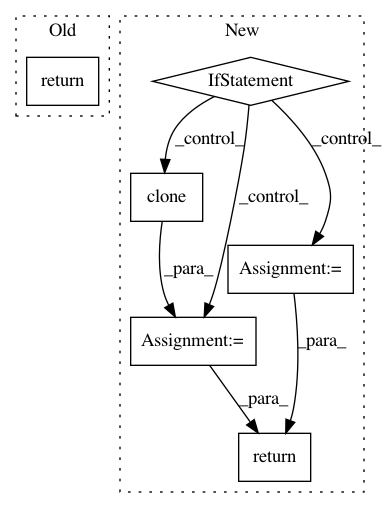

30efaaa572d798212c926e5b2edbf2b0fe7fa2f1,opennmt/decoders/rnn_decoder.py,AttentionalRNNDecoder,_get_initial_state,#AttentionalRNNDecoder#Any#Any#Any#,117
Before Change
attention_mechanism,
attention_layer_size=self.cell.output_size,
initial_cell_state=initial_cell_state)
return self.cell.get_initial_state(batch_size=batch_size, dtype=dtype)
def step(self,
inputs,
timestep,
After Change
self.memory,
memory_sequence_length=self.memory_sequence_length)
decoder_state = self.cell.get_initial_state(batch_size=batch_size, dtype=dtype)
if initial_state is not None:
if self.first_layer_attention:
cell_state = list(decoder_state)
cell_state[0] = decoder_state[0].cell_state
cell_state = self.bridge(initial_state, cell_state)
cell_state[0] = decoder_state[0].clone(cell_state=cell_state[0])
decoder_state = tuple(cell_state)
else:
cell_state = self.bridge(initial_state, decoder_state.cell_state)
decoder_state = decoder_state.clone(cell_state=cell_state)
return decoder_state
def step(self,
inputs,
timestep,
In pattern: SUPERPATTERN
Frequency: 3
Non-data size: 6
Instances
Project Name: OpenNMT/OpenNMT-tf
Commit Name: 30efaaa572d798212c926e5b2edbf2b0fe7fa2f1
Time: 2019-07-15
Author: guillaume.klein@systrangroup.com
File Name: opennmt/decoders/rnn_decoder.py
Class Name: AttentionalRNNDecoder
Method Name: _get_initial_state
Project Name: explosion/thinc
Commit Name: 3c7d4d1240103e4c06a0110b00e11b7e1002dd0e
Time: 2020-01-12
Author: honnibal+gh@gmail.com
File Name: thinc/layers/lstm.py
Class Name:
Method Name: LSTM
Project Name: biolab/orange3
Commit Name: f06fe08941aaeec787a57c8540c887eec3264547
Time: 2015-06-15
Author: ales.erjavec@fri.uni-lj.si
File Name: Orange/canvas/document/editlinksdialog.py
Class Name: GraphicsTextWidget
Method Name: sizeHint